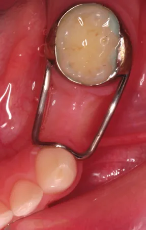
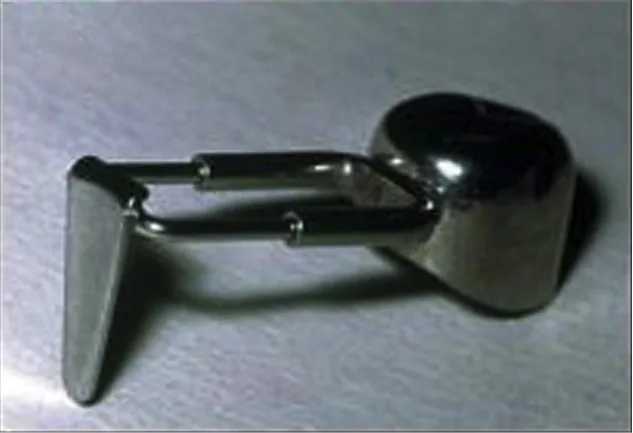

نسخه استخراجشده؛ ترجمه یا تأیید علمی انجام نشده است. وضعیت: captured
با از دست رفتن زودرس یک دندان شیری، دندانهای مجاور به سمت فضای خالی حرکت میکنند: خلفیها به مزیال و قدامیها به دیستال.
نتیجه کاهش طول قوس است — و جانشین دائمی که بعداً میرسد، جای کافی نمییابد: کراودینگ، نهفتگی یا رویش نابجا.
پرخطرترین حالت: از دست رفتن مولر دوم شیری پیش از رویش مولر اول دائمی. در این وضعیت مولر اول دائمی هنگام رویش به مزیال منحرف میشود و فضای پرمولر دوم را اشغال میکند.
چهار عامل تصمیم: کدام دندان، چه زمانی از دست رفته، چقدر تا رویش جانشین مانده، و آیا فضا از قبل کافی بوده.
بند و لوپ — رایجترین. برای از دست رفتن یک دندان در یک سمت، وقتی دندان تکیهگاه پایدار وجود دارد.
کفش دیستالی — گزینهی انتخابی وقتی مولر دوم شیری پیش از رویش مولر اول دائمی از دست رفته. بازوی زیرلثهای مسیر رویش مولر دائمی را هدایت میکند.
قوس زبانی (فک پایین) و نانس (فک بالا) — برای از دست رفتن دوطرفه.
پس سه پرسش انتخاب: یکطرفه است یا دوطرفه، فک بالا یا پایین، و مولر اول دائمی رویش یافته یا نه.


نوع سؤال: ساخت کلمه · 5 خانه
حروف منبع: ئ · ی · د · م · ا